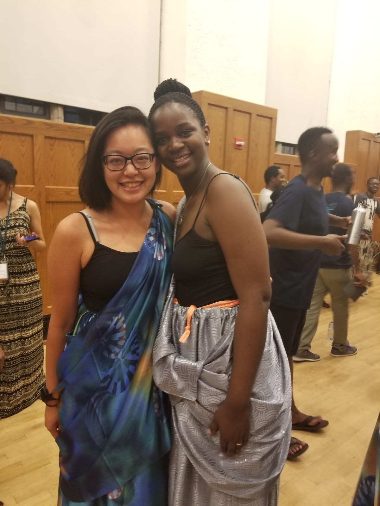
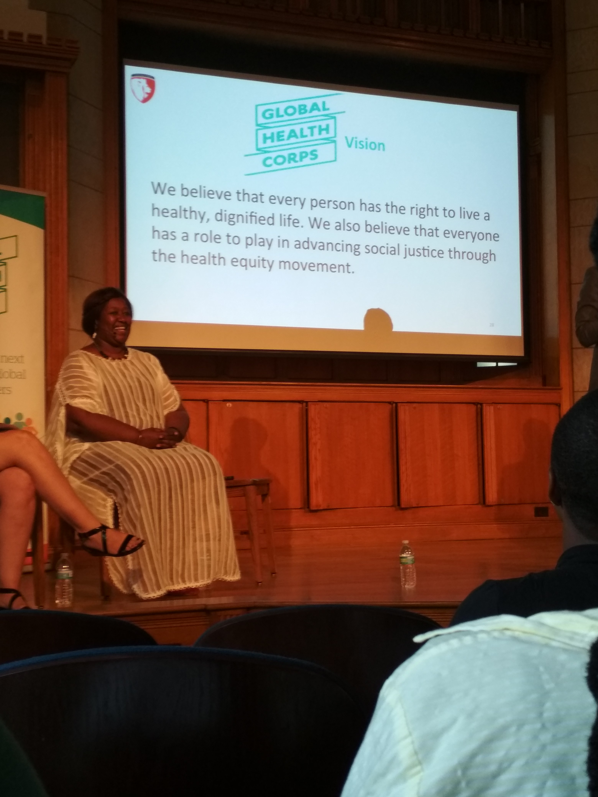
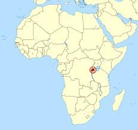
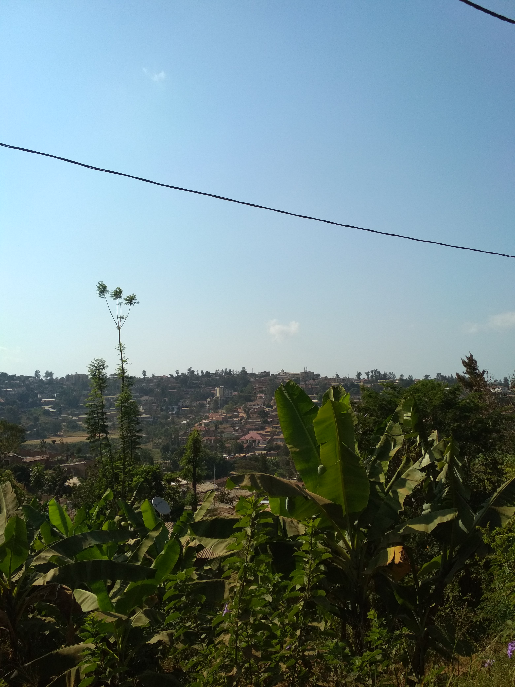
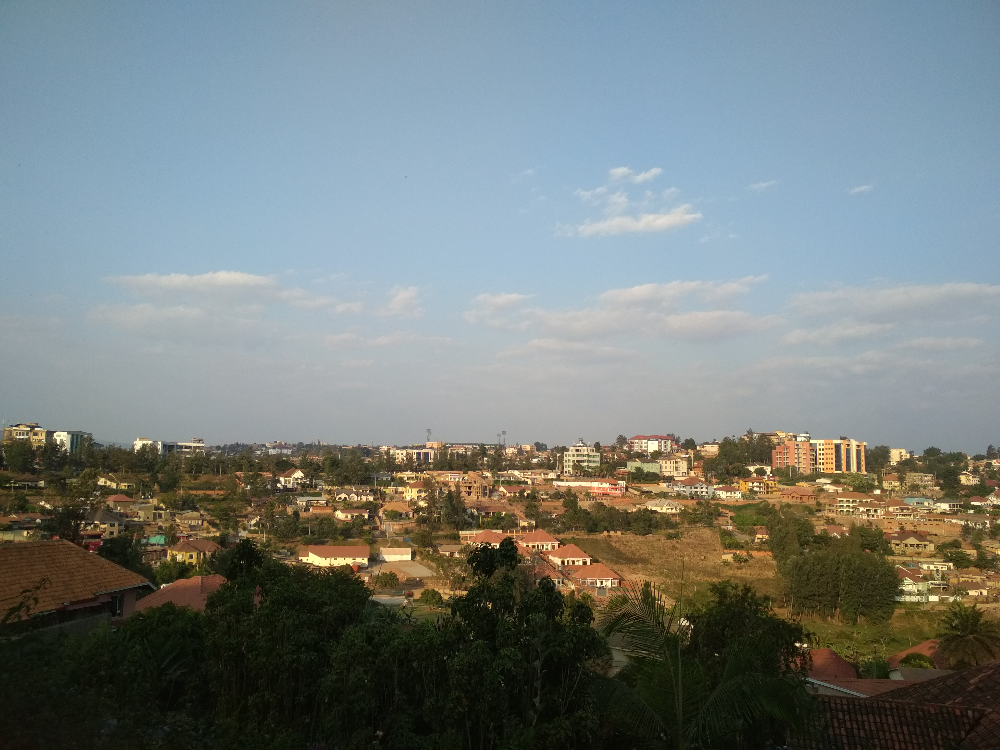

Musings of a Muzungu
Thoughts of a Chinese-American in Rwanda
1 August, 2018
On July 8th, I moved my life halfway across the world to Kigali, Rwanda. I’m really terrible at keeping people updated with my life changes so hopefully this blog will keep me accountable to all of you wonderful people. For some of you, the fact that I moved to Rwanda might have come as a bit of a surprise so let’s rewind a bit to what got me here.
A week before graduating from the University of Michigan (again) with a Master of Health Informatics degree *cue School’s Out by Alice Cooper*, I found out that I had been accepted to be a Global Health Corps Fellow for the 2018-2019 Rwanda cohort. GHC is a fellowship program that pairs international and national fellows together to work in global health organizations in the United States, Rwanda, Zambia, Uganda, and Malawi. I am working at Team Heart, an NGO based in Kigali that is dedicated to supporting the Rwandan health system in providing sustainable cardiac care, with a focus on rheumatic heart disease (RHD). My co-fellow is a Rwandan named Josée and she is one of the most caring, wonderful people I’ve ever met. She always asks if I ate breakfast when she comes into work in the morning and will bring me fruit or treats for no reason other than that she’s a fantastic human being.
Before arriving in our placement countries, we spent two weeks at Yale University for Training Institute (TI). It was our chance to meet and get to know all of the 134 GHC Fellows (26 of whom have been placed in Rwanda) for this upcoming year. We also participated in leadership development seminars and workshops and had the pleasure of hearing some incredible leaders in the global health field speak about their experiences, including Mark Dybul, former executive director of the Global Fund to Fight AIDS, TB, and Malaria, Phil Wilson, CEO of the Black AIDS Institute, Dr. Agnes Binagwho, former Rwandan Minister of Health, and Noerine Kaleeba, founder of The AIDS Support Organization in Uganda. While TI was a bit exhausting, it was inspiring to meet my new Fellow family. This year’s fellows are already so accomplished and passionate; I am so lucky to be surrounded by such wonderful people.
From TI, we embarked for our placement organizations and countries. Having never travelled with such a large number of people before, I was a bit overwhelmed by the trip. I’ve been travelling alone for so long that keeping up with 20 other people in an airport was a struggle. But overall, our journey to Kigali was smooth, with only a short layover in Amsterdam. I will say, the plane from New York City to Amsterdam was much nicer than the plane from Amsterdam to Kigali, despite the latter flight being more full and longer than the first flight. Just because people are flying to Africa doesn’t mean that they want or need any less than people who are flying to Europe…you should really get on that, KLM.
And that’s how I’ve gotten here! Where’s here for some of you geologically challenged folks? See map for reference.
Rwanda is a tiny little country that shares borders with Uganda to the North, the Democratic Republic of the Congo to the West, Burundi to the South, and Tanzania to the East. And despite what might have come to mind when you first thought of Rwanda, it’s an beautiful, clean, and friendly place that is making significant progress every day. (Can we talk about the fact that they ban plastic bans to be more environmentally friendly and clean? I love it.)
Anyways, for the past couple weeks, I’ve just been getting settled, exploring a little more of Kigali day-by-day, and working. The city is pretty easy to navigate, once you get used to it. The neighborhood streets are a little twisty-turny but it only took me a week or so to understand the layout. Kigali is surprisingly spread out for being a big city; unlike New York, there are a lot of open spaces. And while I love NYC, I have really enjoyed having that free space to walk around and relax in. I live in Rugando/Kimihurura, a neighborhood located near the Kigali Convention Center. My neighbors are also so sweet and I’ve gotten to know them better as each day goes by.
****Side story: one of my neighbors saw me walking with a man who just came up to me and started a conversation on my way home from work and came over that night to warn me that the man is known amongst the community as a thief. He made sure to tell me that I should be very cautious of him and also told our guard to be wary of the man if he came around again. While the situation was a little jarring, it was also heartwarming to know that my neighbors are looking out for me even though I’ve only been here for a couple weeks now. End side story.****
I’ve been trying to keep up my running schedule since I’ve been here but it’s been a STRUGGLE. Rwanda is known as the Land of a Thousand Hills and it’s not a lie. By this time next year, my legs and butt are going to be so toned from walking/running up and down all of these hills. It makes for fantastic scenery but my body just ain’t about that life right now.
That’s all I have for you today, folks! Apologies if it’s not very coherent. So much has happened in the last three weeks that I’m still trying to process all the changes that have gone on and prepare myself for those that are yet to come! Thanks for reading.
Love,

PS. I've started to write some posts on Medium that are less personal and more informative. If you're interested in it, click here to read more!